Sin Luna en el cielo, es buena noche para salir de la ciudad y buscar estrellas débiles.
- España
- toda la noche
- México
- toda la noche
- Argentina
- toda la noche
Fuentes: IMO, calendario 2026 · timeanddate
Añadir a Google Calendar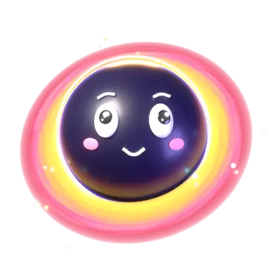
Soy un agujero negro pequeño y curioso. Te cuento el espacio y te aviso de cuándo mirar arriba.
Las próximas citas con el cielo. Las horas son las de España (península), Ciudad de México y Argentina.
Sin Luna en el cielo, es buena noche para salir de la ciudad y buscar estrellas débiles.
De las mejores del año, y esta vez la Luna casi no molesta. Busca un sitio oscuro, túmbate, deja que los ojos se acostumbren y mira el cielo; no hacen falta prismáticos.
En España y México empieza el invierno, con el día más corto del año. En Argentina es al revés: empieza el verano, con el día más largo.
Luna llena cerca de su punto más próximo a la Tierra. Mírala cuando salga, baja sobre el horizonte.
Estoy preparando las próximas citas.
Guarda las citas en el calendario del móvil.
En Android, usa el botón de Google Calendar de cada cita.
Trágate todo lo que sea más pequeño que Vórtex, abre cofres y colecciona el universo. Gratis, sin anuncios y sin registro.
Cada vídeo, con las páginas de donde salen sus datos.
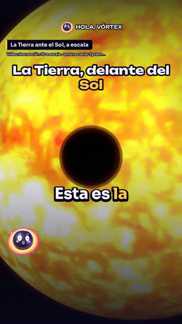
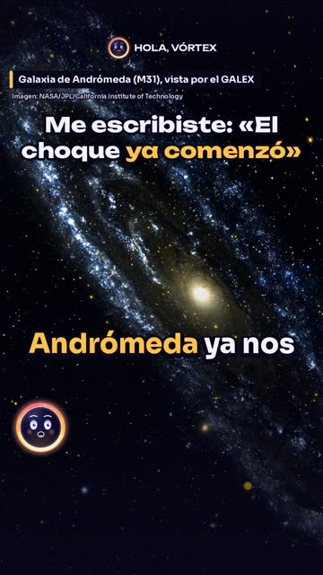
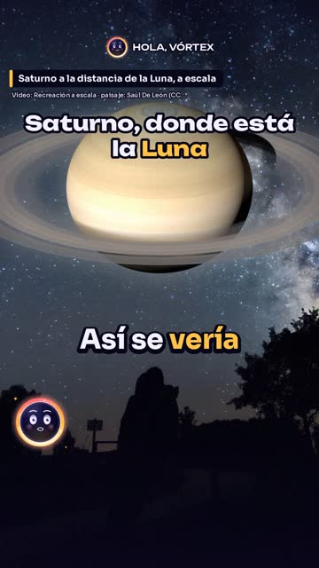
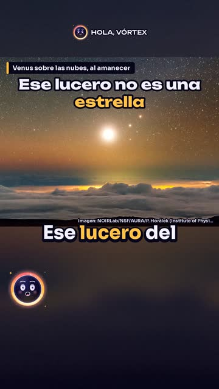
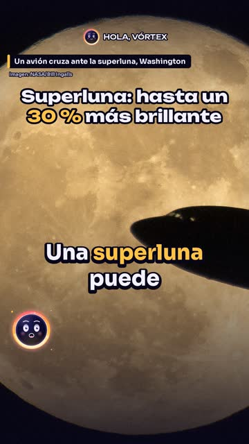
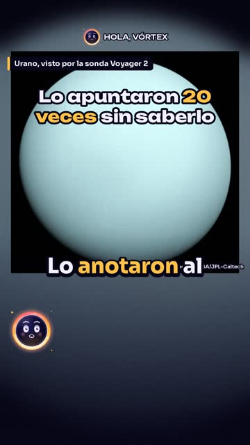
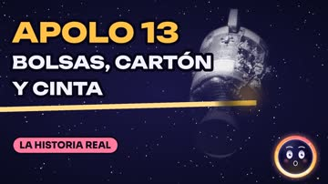
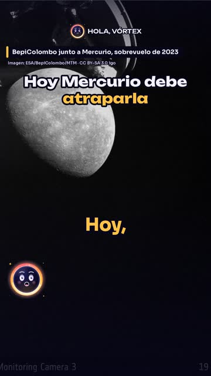
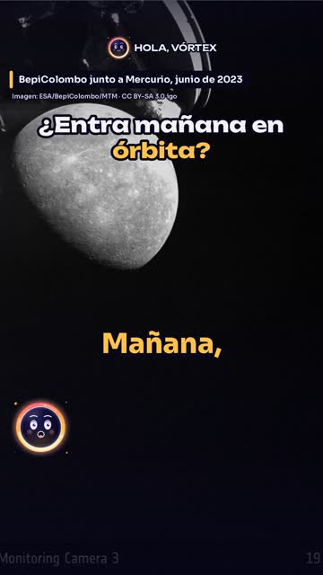
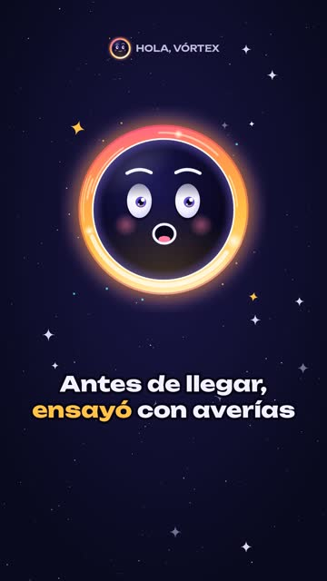
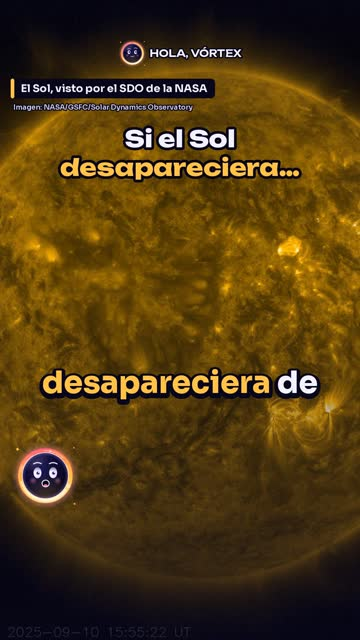
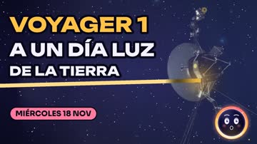
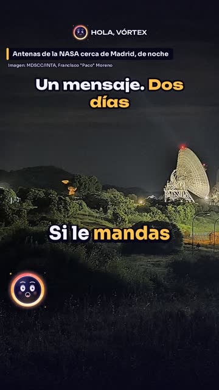
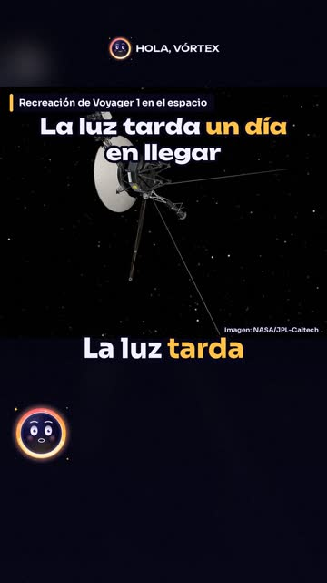
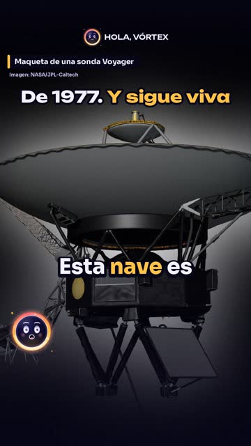
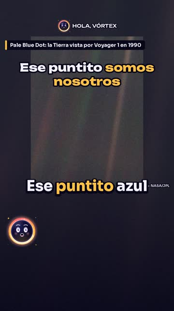
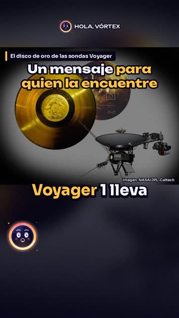
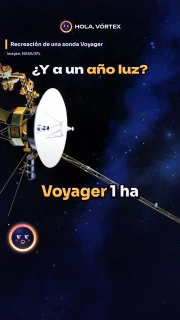
Que yo no dejo escapar ni la luz.